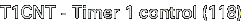

The following should be a complete list of the Special Function Registers in the VMS. More detailed descriptions of the registers follow below the list.
|
|
- CY - Carry flag
- The Carry flag is set when a carry from the most significant bit occurs in an addition, or when a borrow to the most signigicant bit occurs in a subtraction. If an addition or subtraction is performed without a carry or borrow occuring, the Carry flag is cleared.
- AC - Auxiliary Carry flag
- The Auxiliary Carry flag works like the regular Carry flag, but registers carry from, or borrow to, the third bit.
- IRBK - Indirect address register bank
- The IRBK bits can be used to set the base address for indirect addressing. See addressing modes for more information.
- OV - Overflow flag
- The Overflow flag is set when overflow occurs in a signed addition or subtraction, or when the result of a multiplication exceeds 256. The overflow flag is also set when a division by zero is performed.
- RAMBK0 - RAM bank
- This bit selects one of two banks for the 256 general purpose RAM bytes at the low half of RAM space (0 through FF). Bank 0 contains system variables and the CPU stack. Bank 1 is free for use by game software, and automatically selected by the VMS firmware before entering game mode.
- P - ACC parity
- This bit is set when the number of set bits in ACC is odd. Read only.
The TRL and TRH registers together form a 16-bit (TRL being the low 8 bits and TRH being the high 8 bits) address in ROM space which is used by the LDC instruction. LDC will add the ACC register to this 16-bit address, and fetch the byte at the resulting ROM address back to ACC. The TRL and TRH registers can also be used as general purpose registers.
The Stack Pointer points to the topmost element on the stack. The initial value is $7F, and the stack grows upward from $80 to $FF. Note that the stack is always stored in RAM bank 0, regardless of the RAMBK0 setting in PSW.
This register can be used to suspend the CPU to reduce power consumption. The HOLD and HALT bits will automatically be cleared when execution is resumed.
|
- HOLD - Stop CPU and timers
- Setting this bit to 1 will put the VMS into deep suspension. The CPU and all timers and clocks will stop. Only an external interrupt or reset can cause operation to resume.
- HALT - Suspend program execution
- Setting this bit to 1 will cause the CPU to stop executing instructions. All timers and peripherals will keep operating normally while the CPU is stopped, and any interrupt will wake the CPU up.
|
- IE7 - Master interrupt enable
- When this bit is set to zero, all interrupts will be blocked except nonmaskable ones. (Only the external interrupts INT0 and INT1 can be set to nonmaskable.)
- IE1 - INT1 priority level
- When this bit is set to one, the priority of external interrupt INT1 is lowered from nonmaskable to low.
- IE0 - INT0/INT1 priority level
- When this bit is set to one, the priority of both external interrupts INT0 and INT1 are lowered from nonmaskable to low.
The Oscillation Control Register controls the clock frequency of the CPU. Higher frequencies mean increased battery consumption. Subclock mode should be used under normal circumstances.
|
- OCR7 - Clock divisor
- Setting this bit to zero divides the clock frequency by 12. Setting it to 1 (normal setting) divides the clock frequency by 6.
- OCR5 - Subclock mode enable
- Setting this bit to one enables subclock mode (32kHz). Subclock mode is significantly slower than normal mode, but is also power conserving and should be used normally to preserve batteries. Setting the bit to zero enables RC clock mode (600kHz).
- OCR4 - Main clock mode enable
- Setting this bit to one enables the main clock (6MHz). This bit should only be set when subclock mode is disabled, and only when docked in the controller.
- OCR1 - RC Clock control
- Setting this bit to one stops the RC oscillator. This will preserve power, but can naturally only be done in subclock mode.
- OCR0 - Main Clock control
- Setting this bit to one stops the main clock. This bit should always be set when the VMS is not docked.

|
- T1HRUN - Timer 1 High running
- Setting this bit to 1 starts the T1H timer. Setting it to 0 stops the timer.
- T1LRUN - Timer 1 Low running
- Setting this bit to 1 starts the T1L timer. Setting it to 0 stops the timer.
- T1LONG - 16-bit timer enable
- Setting this bit to 1 combines T1H and T1L into one 16-bit timer. Setting it to 0 makes T1H and T1L two separate 8-bit timers.
- ELDT1C - Timer 1 Compare Data Load Enable
- When this bit is set to 0, writes to T1LC and T1HC will not take effect until this bit is set to 1 again. This can be used to set a 16-bit compare value atomically. (When the timers are not running, this bit is ignored.)
- T1HOVF - Timer 1 High Overflow
- This bit is set to 1 whenever T1H overflows.
- T1HIE - Timer 1 High Interrupt Enable
- Setting this bit to 1 enables interrupts (through vector $2B) when T1H overflows.
- T1LOVF - Timer 1 Low Overflow
- This bit is set to 1 whenever T1L overflows.
- T1LIE - Timer 1 Low Interrupt Enable
- Setting this bit to 1 enables interrupts (through vector $2B) when T1L overflows.
The T1L timer has a pulse output signal that outputs a 0 when the current timer count is lower than the contents of this register, and a 1 when the current timer count is higher than the contents of this register. The pulse output signal is connected to the VMS beeper, which makes it possible to use this feature to play a square sound wave.
The T1L and T1LR registers occupy the same address in the SFR area. When the address is read, you get the value of T1L. When it is written, the data is stored into T1LR. T1L is the current Timer 1 Low count, and is automatically incremented 32768/6 times per second when the timer is running. When it reaches 256, an overflow is detected (optionally generating an interrupt, see T1CNT), and the counter is reloaded from the T1LR register. The period of the timer is thus (256 - T1LR)/(32768 / 6) seconds.
This register controls the operation mode of the LCD.
|
- MCR4 - Refresh rate
- Setting this bit to 1 gives a display refresh rate of 166Hz. Setting it to 0 gives a rate of 83Hz.
- MCR3 - Refresh control
- Setting this bit to 0 stops refreshing the LCD.
- MCR0 - Graphics mode
- Setting this bit to 1 selects graphics mode.
|
- VCCR7 - LCD display enable
- Set this bit to 1 to enable LCD display. Always make sure to enable LCD refresh before setting this bit. Also, always clear this bit before disabling LCD refresh.
Port 1 is connected to the external connector on the VMS unit.
|
Port 3 is connected to the keys on the VMS unit. A 0 means key pressed, a 1 means key not pressed.
|


Interrupts can be generated when the keys on the VMS unit are pressed. They are controlled with this register.
|
- P32INT - Port 3 interrupt control
- Set this bit to 1 to allow P3 input to break HOLD mode (see PCON)
- P31INT - Port 3 interrupt flag
- This bit is set to 1 when there is input on P3. It must be cleared manually by the interrupt service handler.
- P30INT - Port 3 interrupt enable
- Set this bit to 1 to enable interrupts to occur when P31INT is set.
This is an input-only port.
|
- P73 - External connector pin 6
- This bit reflects the state of pin 6 on the external connector.
- P72 - External connector pin 13
- This bit reflects the state of pin 13 on the external connector.
- P71 - Battery voltage
- This bit turns to a zero when battery power starts running low. It is monitored by the system time update interrupt, unless disabled with system variable 06E.
- P70 - External voltage
- This bit turns to a one when there is external 5V voltage available. This happens when the VMS is inserted into a controller plugged into a Dreamcast with the power on.
|
- INCE - VRMAD Auto Increment
- If this bit is set, the VRMAD1/VRMAD2 register is automatically incremented after a load or store to VTRBF.
This 9 bit register holds the address of the Work RAM location that can be accessed through VTRBF. VRMAD1 ($164) holds the 8 least significant bits, VRMAD2 ($165) holds the most significant bit.
This register provides access to the 256 byte Work RAM area. Reading from this register will read a byte from the Work RAM, and writing to this register will write a byte to the Work RAM. The Work RAM address accessed is determined by the contents of the VRMAD1 register. The address can optionally be auto-incremented, see VSEL.
The LCD frame buffer is divided into three banks, selected using the XBNK register. The upper half of the dot matrix display is contained in bank 0, and the lower half in bank 1. The four icons at the bottom of the display is controlled with bank 2.
The organization of each dot matrix bank is as follows: Each 48 pixel line is stored as six bytes, the first one being the eight leftmost pixels and so on. Within each byte, the most signigicant bit is leftmost. The data for each pair of two lines is stored consecutively, but then there is a brief skip of four in the address space before the next two lines. The organization of bank 0 is shown below. For bank 1, just add 16 to the line numbers.
|
Organization of bank 2:
|
Last modified: Mon Jun 12 14:54:57 MEST 2000